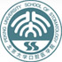

设为首页
|
加入收藏
|
返回首页
|
联系我们
中文
|
ENGLISH
门诊介绍
新闻报道
临床科室
医生介绍
品质保证
口腔常识
医院文化
医学教育
科研专区
人才招聘
留言板
员工专区
会员专区
联系我们
地址：
北京市海淀区花园东路高德大厦2层203室
电话：
010－82037073
传真：
010－82037075
网址：
http://www.dentcare.com.cn
公交路线：
425、16、690、611志新桥南下车即到。653、689、21、826、牡丹园站北200m即到。
地铁路线：
10号线牡丹园站B口北200m即到。
自驾路线：
三环北天平庄桥向北过牡丹园200m即到；四环志新桥南300m即到。

版权所有：北京大学口腔医院第二门诊部
电话：010-64906556 地址：北京市朝阳区安立路66号安立花园B座5层
技术支持：联合易网